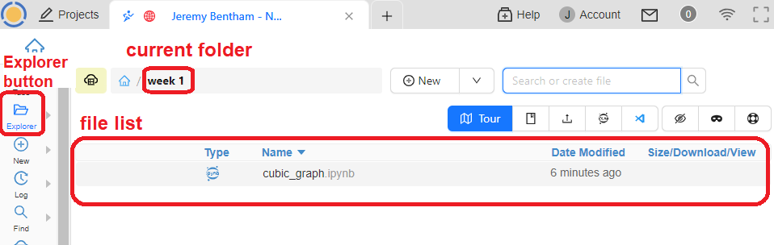
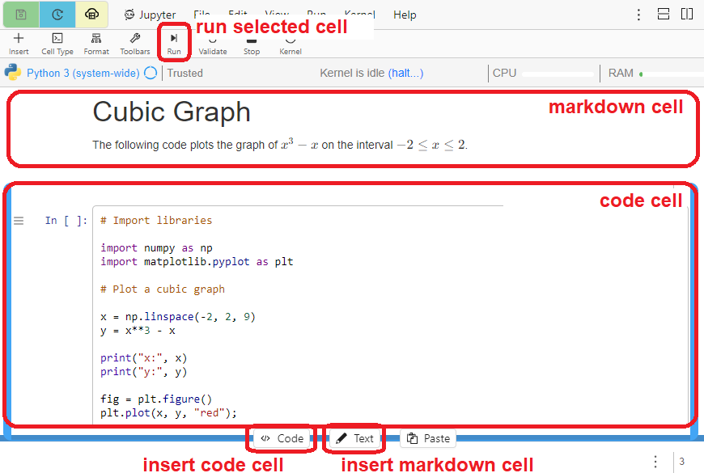
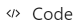

Using CoCalc
Contents
1.1. Using CoCalc#
We will be using an online platform called Cocalc to run and edit notebooks containing Python code. By the end of the workshop you will be comfortable creating, editing and running notebook files using the platform. You will also see a lot of Python code, but don’t worry as you’re not expected to understand it yet.
After completing the chapter you should be able to:
Login to CoCalc and open a project
Open, edit and run notebooks
Create markdown and code cells
Create a notebook from scratch
1.1.1. Initial steps#
Before using CoCalc for the first time you will need to create an account. You will need to do this using your UCL email address, because a licenced, personal project has already been set up for you using that email. Follow the steps below to setup your account and access your project.
✓ Create your account
Navigate to the Cocalc web site www.cocalc.com and click ‘Sign In’. Follow the steps to create an account using your UCL email address.
You must use your UCL email in its long form, which may be similar to firstname.lastname.23@ucl.ac.uk.
Click ‘Account’ in the top-right hand corner and enter your first and last names. You can also change your profile picture and other settings if you wish.
✓ Start your project
Click on “Your Projects”. You should see a project titled something like ‘[your name] - NSCI0005’. If you don’t, this might be because you didn’t use the correct email address in the previous step.
Your project is essentially a virtual computer hosted in the cloud, including operating system (Linux) and preinstalled software libraries so that you can start programming with Python straight away.
The project contains a hierarchical file system much like an ordinary PC. To open the file browser, click the Explorer button on the left toolbar. To navigate the file system, use the ‘Current Folder’ breadcrumb and the File List. Click on a folder in the list to open it, and click the breadcrumb to navigate back up the folder tree.

✓ Open a notebook file
Select the folder
week1then open the fileBarnsley_Fern.ipynb
The extension .ipynb indicates that the file is a Jupyter notebook, also known as an IPython notebook. This type of file contains Python code and formatted text; allowing us to combine computations, results and descriptive text in a single file.
All of the files in the project are your own. For example, every student has their own individual copy of the Barnsley_Fern notebook.
✓ Inspect and run the file
A Jupyter notebook file is split up into cells, which can be of two types. Code cells contain Python code, and markdown cells contains formatted text. You can select a cell by clicking it with the mouse or using the up and down arrows on your keyboard, and run the selected cell by clicking the run button in the toolbar.

Select the first cell in the notebook and run it by clicking the run cell button
.
The second cell should now be selected. After running a cell, the next cell is selected automatically.
Run each cell in the notebook in turn by repeatedly clicking the run cell button.
Nothing will happen until you run the final cell. This is because none of the other cells generate any output! The final cell, however, should generate a plot of a green fern-like shape.
Keyboard shortcut
Instead of clicking the run button, we can use the keyboard shortcut Shift + Enter to run a cell and automatically move to the cell below.
1.1.2. Notebook editing#
Now that you opened and ran your first notebook, you can start to experiment with editing its features. Don’t worry about messing it up as you can always undo any changes.
✓ Edit a code cell
Jupyter notebooks have two different modes, edit and command. To change to edit mode press the Enter key; to return to command mode, press the Esc key. Clicking on a cell with the left mouse button will also put the cell into edit mode. When a cell is in edit mode the left hand border will turn green and when it is in command mode it will turn blue.
Identify the code cell which contains the line of code
npts = 50000(about half-way down the notebook) and select this cell so that it is in edit mode.
The variable
nptsdetermines the number of points the algorithm will draw. Change the line to readnpts = 500, then return to command mode by pressingEsc.
Run the entire notebook by pressing the ‘restart and run all’ button .
A dialog message will ask you to confirm that you are sure. You can choose either
Run all (stop on first error)or
Run all (do not stop on errors).
It should create a very sparse-looking fern.
Before you continue, change the line back to
npts = 50000then re-run the entire notebook.
✓ Create a code cell
Select the bottom cell. From the floating menu below the cell, choose the  option. The new cell will be created immediately below the currently selected cell.
Copy and paste the two lines of code starting
plt.imshow...into the new code cell, then edit the code to changecm.Greenstocm.Reds. Run the code cell.
You should see another identical fern, this time in red.
✓ Create a markdown cell
A markdown cell contains human-readable formatted text. To create a markdown cell using the floating menu, choose the option.
You can convert between markdown and code cells either by selecting the appropriate type from the ‘Cell’ menu or by pressing the m and y keys on your keyboard. The cell must be in command mode to use the keyboard shortcuts. If the cell is in edit mode, pres Esc first.
Create a markdown cell at the bottom of the notebook.
Markdown cells contain text and special formatting instructions. For example, text surrounded by double asterisks symbols is rendered in bold.
Change to markdown edit mode and enter following text:
Thank you for generating the **Barnsley Fern**!
Then pressShift+Entertogether to render the markup cell.
Formatting tips
Other formatting instructions include # to denote a heading, *text* for italics and - for a bulletted list.
✓ Delete a cell
To delete a cell, first select the cell then press x. The cell must be in command mode. If the cell is in edit mode, pres Esc first.
Delete the cell you created to plot the red fern.
✓ Typeset mathematics
You can typeset mathematical expressions in markdown mode by enclosing the expression using dollar symbols in the manner $...$. If we use a double dollar then the mathematical expression will appear on its own line. Some examples are shown below:
Consider a population growth model of the form $$P=P_0 e^{kt}$$ where $t$ represents time, $P_0$ is the initial population, and $k$ is the exponential growth rate.
We can investigate the asymptotic behaviour of rational fractions such as $$\frac{3x^2+4}{(x-3)(x-2)}$$
Lots of mathematical expressions use Greek letters such as $\pi$, $\alpha$, $\beta$ $\lambda$, $\theta$, etc.
The syntax used in these examples is inherited from a typesetting language called LaTeX, which is pronounced “Lay-tech” or “Lah-tech”.
Therefore if you want to find online resources to help you with typesetting mathematical expressions you can include the word latex in your search term. For example: latex integral.
Note
LaTeX is a very powerful typesetting language in its own right. Like Python it can be extended by importing from a vast array of online libraries. However, much of this functionality is not compatible with Jupyter notebooks.
Because of this, if you try to search for how to do something in LaTeX you’ll often find a technique that is not supported. For example, you may find solutions that rely on importing some library using the \usepackage directive. Do not attempt this!
The best advice is for you to stick to using LaTeX only for writing mathematics expressions, which normally works flawlessly in Jupyter and gives beautiful results.
Exercise
Try to produce the following expression in markdown
Solution
If you right-click on typeset mathematics in this jupyterbook you should see a dropdown menu with the option Show Math As > TeX Commands, which will provide the code that was used to produce it! For this example, the code was
$$\int_{0}^{\infty}\frac{x^3}{e^x-1}dx=\frac{\pi^4}{15}$$
To right-click using a Mac: Press the Ctrl key on your keyboard and click the mouse button or the trackpad.
1.1.3. Create a new file#
To create a new file in the current folder, type the desired name in the ‘New File Name’ box, then click the arrow next to the ‘New File’ button and select the file type. To create a new folder, select ‘Folder’ at the bottom of the list of file types.
Exercise 1.1
Create a new file sandbox.ipynb in the week1 folder. You can either type the full file name including extension .ipynb, or just type sandbox then select ‘Jupyter Notebook’ from the list. If it asks you to select a kernel, choose ‘Python 3 (system-wide)’.
File management tips
You should create a separate folder for each week’s work. Within each folder you should create one file for the homework problem, as well as other files for practice and draft work.